ESCARGOT
レーズンバターサンド＆
キャラメルサンド＆
チェリーバターサンド
選りすぐりの素材を贅沢に使い
人気レストランが手間暇をかけた焼き菓子
ここが「極み」
- ＜レーズンバターサンド＞
山形県置賜産のデラウェアをラムレーズンに北海道産発酵バターの風味が香る - ＜キャラメルサンド＞
銅鍋で炊き上げたキャラメル
北海道産発酵バターを使ったクッキー生地 - ＜チェリーサンド＞
山形県で生産されたさくらんぼのみを使用
さくらんぼの風味が口いっぱいに広がる
山形市蔵王みはらしの丘に位置する「ESCARGOT」は、お洒落な雰囲気と、新鮮で美味しい山形県食材を生かしたメニューが人気のイタリアンレストランです。
今回ご紹介する「レーズンバターサンド」「キャラメルサンド」「チェリーバターサンド」のクッキー3種は、そのESCARGOTに併設された洋菓子店の絶品スイーツ。贅沢に使われる北海道産発酵バターや山形デラウェアなど厳選されたリッチな素材と、手間と時間をかけた手づくりのこだわりが生み出す豊かで濃厚な味わいを、ぜひ賞味ください。
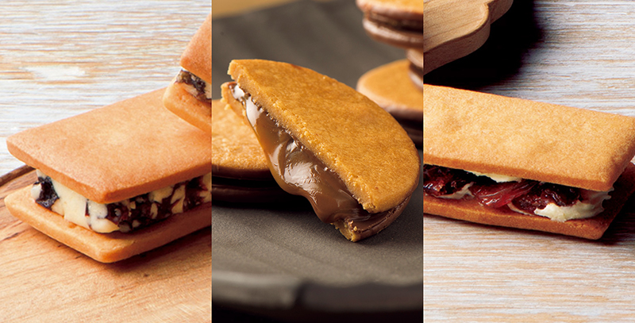
【山形の極み】パティスリーESCARGOT 焼き菓子シリーズ
RESTAURANTとFRESH＆BAKEDの2店舗で、
温かなおもてなしと美味しさへのこだわりを追求
特注の釜で焼く自慢のピザ、その日の朝に仕入れた食材で作る新鮮で美味しいランチやディナー……。
山形市で屈指の人気を誇るイタリアンレストラン「キッチンハウスえすかるご」は1992年創業以来、温かなおもてなしと美味しさへのこだわりを追求し、人々を魅了しつづけてきました。
そのレストランが、2016年に蔵王みはらしの丘へと移転。
店名を「ESCARGOT」とあらため、RESTAURANTとFRESH＆BAKEDの2店舗で、それぞれ美味しいお料理とお菓子を提供しています。
RESTAURANTは、お洒落なインテリアと高い天井がとても開放的。
また2階席では蔵王を臨む雄大な景色を眺めながらお料理を楽しむことができます。
隣接のFRESH＆BAKEDも、同じくセンスの良い店内が印象的なブラッセリーとなっています。シフォンケーキ、パウンドケーキ、タルト、サブレ、焼き菓子などを販売。
そのどれもが、小さな厨房で丁寧に手づくりされた、真心のこもった上質なお菓子です。
今回、そのFRESH＆BAKEDからご紹介するのは「レーズンバターサンド」と「キャラメルサンド」「チェリーバターサンド」のクッキー3種。
国産の焼き菓子専用小麦粉、北海道産発酵バターなど素材を厳選し、食感や味わいをとことん追求して、時間をかけてつくられました。
日持ちのする焼き菓子なので、ご自宅用としてはもちろん、大切な方への手土産やプレゼントとしても喜ばれています。
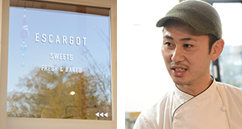
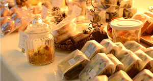
香り高いラム酒に漬けられたデラウェアの味わいが絶品の
「極み」のレーズンバターサンド
香り高いラムレーズン入りのバタークリームを小麦粉本来の風味を生かした素朴で飽きのこないクッキー生地で挟んだ「レーズンバターサンド」。エスカルゴにも同名商品がありましたが、今回ご紹介する「レーズンバターサンド」はリンベルと特注素材を使ったオリジナル商品を専売しています。
この商品の一番のこだわりは、なんといってもレーズンです。
まず、厳選された山形県置賜（おきたま）産のデラウェアをしっかりと乾燥させます。
次にラム酒で戻すのですが、その際、真空包装にして、1週間じっくりと染みこませるのです。一般的には1～2日でOKなのですが、1週間という長い時間が、バターと混ざり合ったあとも芳醇な香りがただよう秘訣。
また、この製法だとブドウの皮の固さが若干残るのですが、だからこそ防腐剤など使われていない自然そのものの食感と味わいが楽しめるのです。
もちろんこだわっているのは、レーズンだけではありません。生地もそのレーズンを引き立たせるため、素朴な味わいを追求しました。そこで使用しているのが、アフィナージュ（熟成）させた小麦粉と北海道産発酵バターです。
日本で親しまれているのは発酵させない甘性バターですが、ヨーロッパでは乳酸菌を加えて発酵させる発酵バターが一般的です。
ESCARGOTは、その独特の風味やコクに注目しほかの洋菓子店に先駆けて発酵バターを使いはじめました。おかげで生産者と親密な関係を築き上げることができ、現在でも最上級の発酵バターを優先的に仕入れられるそうです。
素材に妥協せず、丁寧に時間と手間をかけてつくられたレーズンバターサンドは、甘酸っぱさと弾けるような食感が秀逸。素材の良さが伝わるワンランク上の美味しさです。
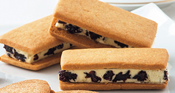
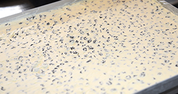
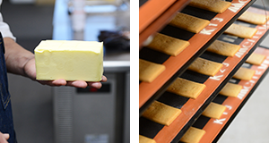
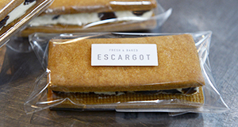
軽い口当たりと濃厚な味わいを追求して生まれた
「極み」のキャラメルサンド
薄めに焼いたクッキーと味わい深いキャラメルが絶妙なハーモニーをかもしだす、キャラメルサンド。こちらもリンベルのリクエストに基づき試行錯誤を重ねて生まれた、リンベルでしか購入できないオリジナル商品です。
クッキー生地は、深い味わいと軽さを両立させるために小麦粉7：アーモンドパウダー3の割合で焼きあげました。サクサクと口当たりが軽く、香ばしい生地になっています。
サンドされたキャラメルは、銅鍋で力強く炊き上げてつくった、生キャラメル。なめらかな口当たりですが、味に強さがあります。
その生地とキャラメルのつなぎとして入っているのが、ミルクチョコレートです。
レーズンバターサンドと同様、北海道産発酵バターをやわらかくし、空気を含ませてホイップすると、白いバタークリームになります。そこに溶かしたクーベルチュール（植物油脂など使用されてない純粋なチョコレート）のホワイトチョコを加えます。マーガリンやショートニングなどで代用せず、砂糖や水あめなども一切加えていない、発酵バターの風味とホワイトチョコの甘味だけでつくられた純粋なミルクチョコレートなのです。
口どけのよいクーベルチュールチョコレートで、力強いキャラメルを包み、香ばしいクッキー生地でサンドしたキャラメルサンド。素材へのこだわりと匠の技が生んだ逸品を、ぜひお楽しみください。
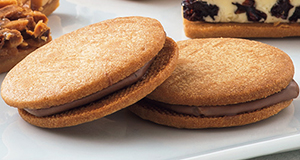
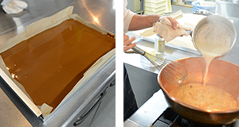
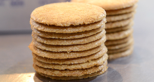
山形県産のさくらんぼを使った新食感スウィーツ
「極み」のチェリーバターサンド
レーズンバターサンドの姉妹品として、リンベルがオリジナルで開発を依頼した「チェリーバターサンド」です。
山形県産のさくらんぼを使用。
さくらんぼを保存料なしで乾燥させ、さくらんぼの蒸留酒キルシュワッサーに漬け込んでから、北海道産発酵バタークリームとともに、素朴なクッキー生地にサンドしました。
さくっとほおばるとひと呼吸遅れてさくらんぼの甘酸っぱさが口中に広がります。
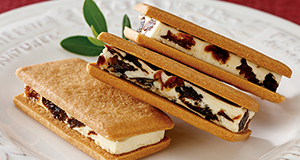
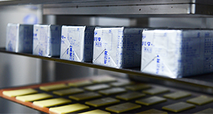
レビュー
開封から味わいまで、
美食の専門家が徹底レビュー！
バタークッキーのおいしさがたまりません。ぶどうのおいしさをしっかり味わえます。
管理栄養士川口由美子さん
-
なんともオシャレなパッケージ。まるでフランス土産のようなオシャレ感です。
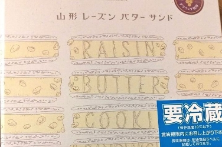
-
オシャレな友達への贈答品としても良さそうです。
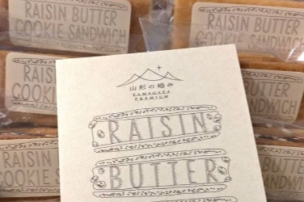
-
こんなにレーズンがしっかり！バタークリームとの相性が抜群です。
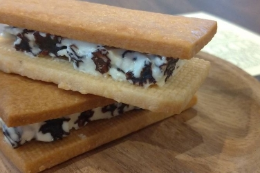
-
レーズンはとても栄養が豊富。最強食材がおいしくいただける、レーズンバターサンド。
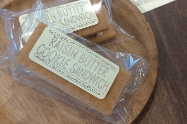
すべて意味がある素材と手間によって、このキャラメルサンドが完成されているのだな

グルメライター猫田しげる さん
-
イラストやロゴのデザインに心くすぐられてしまうんですよね。
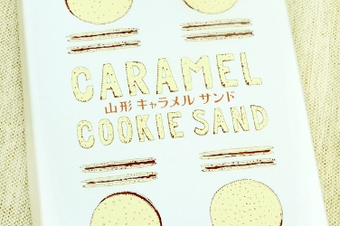
-
中身もシンプルかつ洗練されたパッケージです。
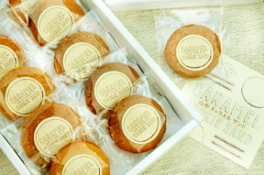
-
裁断してみると、キャラメルをチョコレートでコーティングしてあり、何と手間のかかること……と感嘆してしまいました。
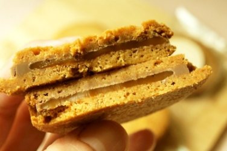
-
毎回リンベルさんには「やられた……」と思うのです。
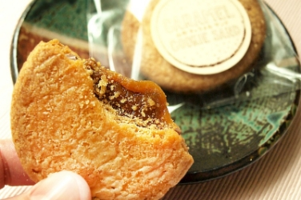
妥協のない姿勢が味にも表れています。ボリュームがあり、ひとつ食べるだけでも満足できます。

グルメライター藤岡智子 さん
-
さくらんぼを思わせる、華やかなボックス。さすが細部までこだわっていますね。
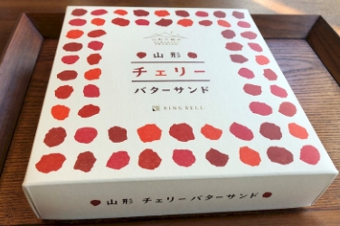
-
可愛く包装された10個のチェリーバターサンド。「早く食べたい！」という気持ちが高まります。
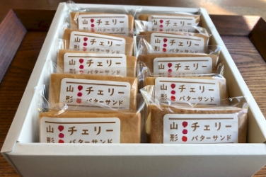
-
予想していた以上に厚みがあり、食べごたえがありそうです。
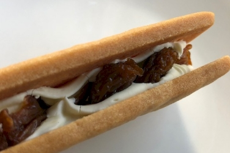
-
バタークリームは上品な甘さ、甘酸っぱいさくらんぼがよく合います。
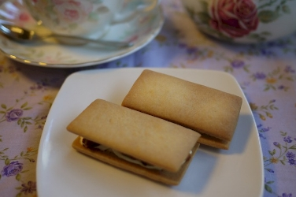